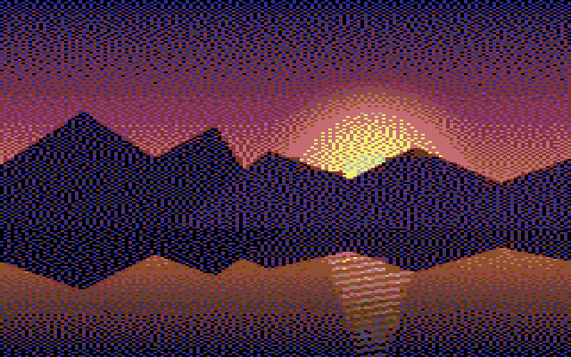
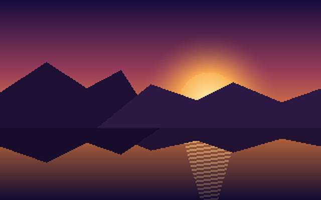

macOS · Commodore 64 · bitmap mode
A native macOS app and command-line tool — one shared engine — that converts modern images into pictures a Commodore 64 can display: crop, dither to the 16-color palette, satisfy the per-cell color limits, and export files that load on real hardware.
status: v1.0.0 — engine, app, and CLI are built and tested. Download it from GitHub Releases.


SOURCE C64 MULTICOLORThe C64's VIC-II chip has a fixed 16-color palette and two bitmap modes. Neither can put arbitrary colors at arbitrary pixels — color choices are made per character cell, and that restriction is what gives C64 images their look. image64 targets both modes:
| Hires | Multicolor | |
|---|---|---|
| resolution | 320 × 200 | 160 × 200, pixels displayed double-wide |
| cell size | 8 × 8 px | 4 × 8 px |
| colors per cell | any 2 of 16 | 1 shared background + any 3 of 16 |
| memory | 8000 B bitmap + 1000 B screen RAM | + 1000 B color RAM + 1 background byte |
Both modes display at 8:5, so the crop tool is locked to that aspect regardless of mode.
Every color the VIC-II can produce. Exported files store 4-bit indices; RGB values only matter for color matching and preview, where image64 uses the Colodore reproduction (shown here) or the darker Pepto measurement, selectable.
In the app: drop an image, adjust the 8:5 crop on the source, and watch the converted result beside it — every change re-runs the pipeline:
The preview is rendered from the packed bytes — not from an intermediate — so the picture on screen is the picture that exports.
The same five steps run from the command line — the CLI and the app call the identical engine code, so a scripted conversion and an app export with the same parameters produce byte-identical files:
image64 convert photo.jpg -o picture.koa # multicolor, inferred from .koa image64 convert photo.jpg -o picture.art # hires, inferred from .art image64 convert photo.jpg -o out.koa --dither bayer --palette colodore --json
Outputs overwrite without prompting, so a shell for loop
batch-converts a directory. For AI agents the repository ships a skill
(skills/c64-image-conversion) documenting the CLI surface and the
emulator verification loop — and a test keeps that document in sync with
--help, so it cannot drift.
load address $6000 (2 B)
bitmap (8000 B)
screen RAM (1000 B)
color RAM (1000 B)
background (1 B) — 10003 bytes total
load address $2000 (2 B)
bitmap (8000 B)
screen RAM (1000 B)
padding (7 B) — 9009 bytes total
Plus a runnable .prg — a self-displaying program that shows the
picture anywhere a C64 runs, in
VICE or on real hardware — while the
.koa and .art files are the standard interchange layouts
that existing C64 paint programs and viewers read. With the neighboring
Project 64 toolset:
c64 session start
c64 run picture.prg # display it on the emulated machine